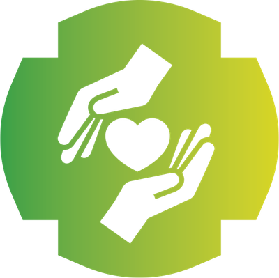
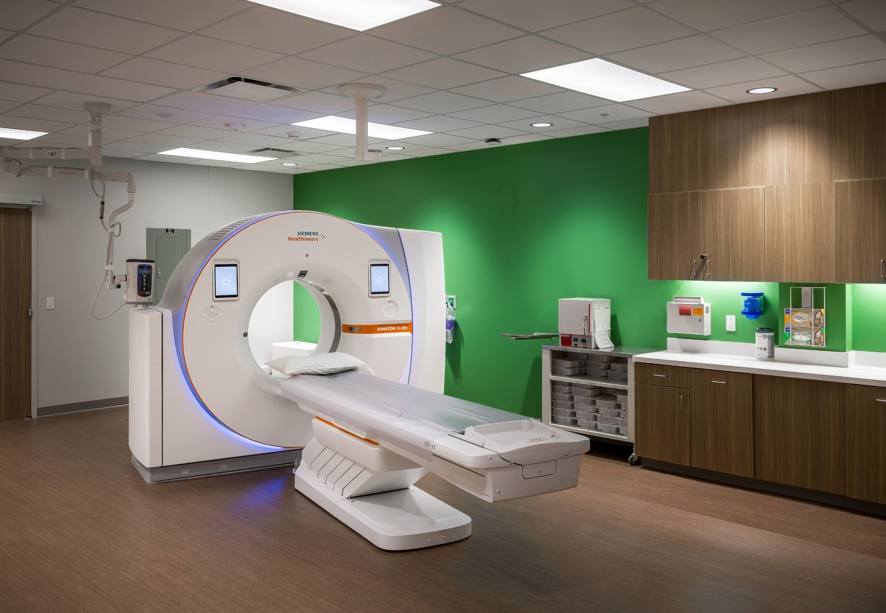
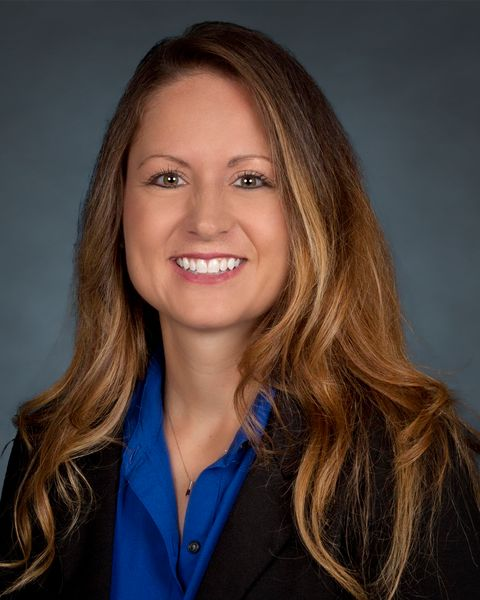
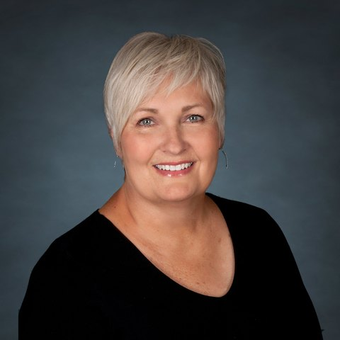
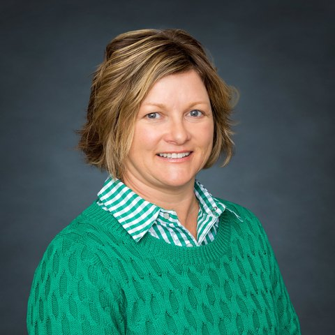
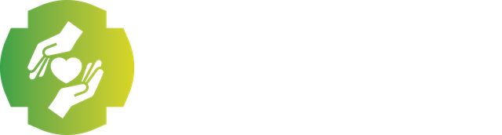

Citizens Foundation
Gifts that keep care close to home
Citizens Foundation raises funds to support Citizens Health and the people of northwest Kansas. Every gift goes to work for patients, families, and the future of rural health care.
- Invested since 2006
- More than $11 million
- Status
- 501(c)(3) nonprofit
- Phone
- (785) 460-1264
Our impact
Your gifts are in the building
Since 2006, Citizens Foundation has invested more than
$11 million
in facilities, equipment, and programs at Citizens Health.

- 2019
$180,000 for the Citizens Clubhouse child care center, and $200,000 for furnishings in the Citizens Medical Center renovation
- 2017
About $244,000 for 3D mammography
- 2016
A residence for additional community child care
- 2015
$525,000 for a Siemens Luminos Agile RF system in radiology
- 2013–2014
$1.9 million for Family Center for Health Care addition
- 2011
$250,000 for a mammography system
- 2009–2010
$3.6 million for the Citizens Health Annex and Citizens Medical Center construction
- 2007–2008
$933,000 for a new MRI and building
- 2007
$720,000 for nuclear medicine, and $500,000 for a 16-slice CT scanner upgrade
- 2006
$500,000 for an orthopedic surgery addition, and $850,000 for a Family Center expansion
Ways to give
Make a gift
Give once or build a long-term giving plan. Your entire tax-deductible gift supports the Foundation's mission.
Planning a larger or deferred gift? Our staff will work with your attorney or financial advisor.
Memorial Program
Honor someone you love
A memorial gift keeps a loved one's legacy alive by supporting the care they valued. Memorials are tax deductible.
- Call us or fill out the memorial formSetting up a memorial fund takes only a few minutes.
- Decide together how the gifts are usedOur Executive Director works with your family.
- See their name on the memorial boardOnce a fund reaches $500, your loved one is recognized on our memorial board.
Grateful Patient Program
Thank a caregiver
Did a nurse, doctor, or team go the extra mile for you or your family? Honor them with a gift.
A Grateful Patient gift recognizes the caregiver who brightened your day while supporting care around the clock, every day of the year. You can direct your gift to a specific department, service, program, or facility. Gifts are tax deductible.
Scholarships
Investing in future caregivers
Each year the Foundation awards $6,000 in scholarships to northwest Kansas students pursuing health care careers. Applications are due April 1.
Who can apply
- Students pursuing a health care career, at any stage of study and at any school
- Residents of Cheyenne, Decatur, Gove, Logan, Norton, Rawlins, Sheridan, Sherman, Thomas, or Wallace county
- Preference for students who plan to practice in a rural area
- Board of Regents nursing scholarships are also available, with one year of service at Citizens Health
Request an application from Jen Schoenfeld at jschoenfeld@cmciks.com or (785) 460-1264. Download the application (PDF)

A scholarship brought her homeDr. Kysha Nichols-Totten received a Citizens Foundation scholarship and now practices at Family Center.Volunteer
Give the gift of time
Volunteers share their talents, kindness, and concern with our patients, residents, and families every day. Anyone who can give the gift of time can volunteer.
Choose the location you're interested in, including Prairie Senior, and we'll be in touch.
About the Foundation
Mission, vision & board
Mission
To nurture relationships that build community and philanthropic support for Citizens Health's ability to provide quality health care.
Vision
For Citizens Health to be recognized for exemplary health care, with a growing endowment, successful capital campaigns, and the Foundation as the beneficiary of choice.
Values
Board of Directors
- Pat MalloryChair
- Randy WilsonVice Chair

Lana JohnsonSecretary- J.L. EvinsTreasurer
- Jody MetcalfBoard member
- Wendy WeishaarBoard member

Jen SchoenfeldExecutive Director
The Foundation hosts fundraising events throughout the year that are open to the public. See upcoming events

Every gift stays here at home
Your gift supports patients, residents, and families across northwest Kansas.